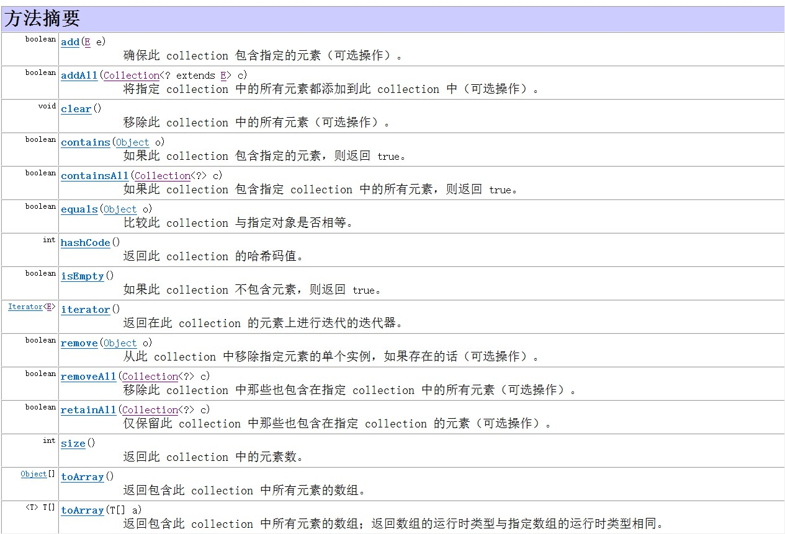

菜鸟教程java集合框架
集合使用的回顾
A:集合使用的回顾
*a.ArrayList集合存储int类型元素
public static void main(String[] args) {
ArrayList<Integer> list = new ArrayList<Integer>();
list.add(111);
list.add(555);
for(int i=0; i<list.size(); i++){
System.out.println(list.get(i));
}
}
*b.ArrayList集合存储Person类型元素
public static void main(String[] args) {
ArrayList<Person> list = new ArrayList<Person>();
list.add(new Person(“小强”));
list.add(new Person(“老王”));
for(int i=0; i<list.size(); i++){
Person p = list.get(i);
System.out.println(p);
}
}
//get调用的是类中的ToString方法
迭代器iterator
迭代器的概述
遍历用
a:java中提供了很多个集合，它们在存储元素时，采用的存储方式不同。我们要取出这些集合中的元素，可通过一种通用的获取方式来完成。
b:Collection集合元素的通用获取方式：在取元素之前先要判断集合中有没有元素，如果有，就把这个元素取出来，继续在判断，如果还有就再取出出来。一直把集合中的所有元素全部取出。这种取出方式专业术语称为迭代。
c:每种集合的底层的数据结构不同,例如ArrayList是数组,LinkedList底层是链表,但是无论使用那种集合,我们都会有判断是否有元素以及取出里面的元素的动作,那么Java为我们提供一个迭代器定义了统一的判断元素和取元素的方法
实现原理
/*
* 集合中的迭代器:
* 获取集合中元素方式
* 接口 Iterator : 两个抽象方法
* boolean hasNext() 判断集合中还有没有可以被取出的元素,如果有返回true
* next() 取出集合中的下一个元素
*
* Iterator接口,找实现类.
* Collection接口定义方法
* Iterator iterator()
* ArrayList 重写方法 iterator(),返回了Iterator接口的实现类的对象
* 使用ArrayList集合的对象
* Iterator it =array.iterator(),运行结果就是Iterator接口的实现类的对象
* it是接口的实现类对象,调用方法 hasNext 和 next 集合元素迭代
*/
public class IteratorDemo {
public static void main(String[] args) {
Collection<String> coll = new ArrayList<String>();
coll.add("abc1");
coll.add("abc2");
coll.add("abc3");
coll.add("abc4");
//迭代器,对集合ArrayList中的元素进行取出
//调用集合的方法iterator()获取出,Iterator接口的实现类的对象
Iterator<String> it = coll.iterator();
//接口实现类对象,调用方法hasNext()判断集合中是否有元素
//boolean b = it.hasNext();
//System.out.println(b);
//接口的实现类对象,调用方法next()取出集合中的元素
//String s = it.next();
//System.out.println(s);
//迭代是反复内容,使用循环实现,循环的条件,集合中没元素, hasNext()返回了false
while(it.hasNext()){
String s = it.next();
System.out.println(s);
}
}
}
//集合可以存储任意类型的对象
//集合中,不指定存储的数据类型, 集合什么都存
Collection coll = new ArrayList();
//迭代器获取
Iterator it = coll.iterator();
遍历过程中不能修改集合的长度
泛型
JDK1.5 出现新的安全机制,保证程序的安全性
泛型: 指明了集合中存储数据的类型 <数据类型>
Collection<String> coll = new ArrayList<String>();
java泛型,是伪泛型ArrayList<String>编译手段
arr.add(“”)不是String,编译失败
存储的是String编译成功.
编译后的class文件没有泛型
可以保证安全性(不符合泛型编译不通过)
带有泛型的类
ArrayList<E>
E: Element 元素, 实际思想就是一个变量而已
ArrayList<Integer> , E 接受到类型,就是Integer类型
泛型通配符
import java.util.ArrayList;
import java.util.Collection;
import java.util.HashSet;
import java.util.Iterator;
/*
* 泛型的通配符
*/
public class GenericDemo {
public static void main(String[] args) {
ArrayList<String> array = new ArrayList<String>();
HashSet<Integer> set = new HashSet<Integer>();
array.add("123");
array.add("456");
set.add(789);
set.add(890);
iterator(array);
iterator(set);
}
/*
* 定义方法,可以同时迭代2个集合
* 参数: 怎么实现 , 不能写ArrayList,也不能写HashSet
* 参数: 或者共同实现的接口
* 泛型的通配,匹配所有的数据类型 ?
*/
public static void iterator(Collection<?> coll){
Iterator<?> it = coll.iterator();
while(it.hasNext()){
//it.next()获取的对象,什么类型
System.out.println(it.next());
}
}
}
通配符的限定
定义方法,可以同时遍历3集合,遍历三个集合的同时,可以调用工作方法 work
? 通配符,迭代器it.next()方法取出来的是Object类型,怎么调用work方法
强制转换: it.next()=Object o ==> Employee
方法参数: 控制,可以传递Employee对象,也可以传递Employee的子类的对象
泛型的限定 本案例,父类固定Employee,但是子类可以无限?
? extends Employee 限制的是父类, 上限限定, 可以传递Employee,传递他的子类对象
? super Employee 限制的是子类, 下限限定, 可以传递Employee,传递他的父类对象
增强for
/*
* JDK1.5新特性,增强for循环
* JDK1.5版本后,出现新的接口 java.lang.Iterable
* Collection开是继承Iterable
* Iterable作用,实现增强for循环
*
* 格式:
* for( 数据类型 变量名 : 数组或者集合 ){
* sop(变量);
* }
*/public class ForEachDemo {
public static void main(String[] args) {
function_2();
}
/*
* 增强for循环遍历集合
* 存储自定义Person类型
*/
public static void function_2(){
ArrayList<Person> array = new ArrayList<Person>();
array.add(new Person("a",20));
array.add(new Person("b",10));
for(Person p : array){
System.out.println(p);
}
}
public static void function_1(){
//for对于对象数组遍历的时候,能对象的方法
String[] str = {"abc","itcast","cn"};
for(String s : str){
System.out.println(s.length());
}
}
/*
* 实现for循环,遍历数组
* 好处: 代码少了,方便对容器遍历
* 弊端: 没有索引,不能操作容器里面的元素
*/
public static void function(){
int[] arr = {3,1,9,0};
for(int i : arr){
//相当于对i赋值
System.out.println(i+1);
}
System.out.println(arr[0]);
}
}
集合Collection
集合是java中提供的一种容器，可以用来存储多个数据。
集合和数组的区别
- 数组的长度是固定的。集合的长度是可变的。
- 集合中存储的元素必须是引用类型数据
集合继承关系图
A:集合继承关系图
a:ArrayList的继承关系:
查看ArrayList类发现它继承了抽象类AbstractList同时实现接口List，而List接口又继承了Collection接口。Collection接口为最顶层集合接口了。
源代码：
interface List extends Collection {
}
public class ArrayList extends AbstractList implements List{
}
b:集合继承体系
这说明我们在使用ArrayList类时，该类已经把所有抽象方法进行了重写。那么，实现Collection接口的所有子类都会进行方法重写。
Collecton接口常用的子接口有：List接口、Set接口
List接口常用的子类有：ArrayList类、LinkedList类
Set接口常用的子类有：HashSet类、LinkedHashSet类
Collection 接口
|
----------------------------------------------------------------
| |
List接口 Set接口
| |
---------------- -------------
| | | |
ArrayList类 LinkedList类 HashSet类 LinkedHashSet类
集合Collection的方法

Collection接口中的方法
是集合中所有实现类必须拥有的方法
使用Collection接口的实现类,程序的演示
ArrayList implements List
List extends Collection
方法的执行,都是实现的重写
学习Java中三种长度表现形式
数组.length 属性 返回值 int
字符串.length() 方法,返回值int
集合.size()方法, 返回值int
Lsit
List接口派系, 继承Collection接口
下面有很多实现类
List接口特点: 有序,索引,可以重复元素
实现类, ArrayList, LinkedList
List接口中的抽象方法,有一部分方法和他的父接口Collection是一样
List接口的自己特有的方法, 带有索引的功能
详细看文档
Set
Set接口,特点不重复元素,没索引
Set接口的实现类,HashSet (哈希表)
特点: 无序集合,存储和取出的顺序不同,没有索引,不存储重复元素
代码的编写上,和ArrayList完全一致
详细看文档
Map
Map接口中的常用方法
/*
* Map接口中的常用方法
* 使用Map接口的实现类 HashMap
*/
public class MapDemo {
public static void main(String[] args) {
function_2();
}
/*
* 移除集合中的键值对,返回被移除之前的值
* V remove(K)
*/
public static void function_2(){
Map<Integer,String> map = new HashMap<Integer, String>();
map.put(1, "a");
map.put(2, "b");
map.put(3, "c");
System.out.println(map);
String value = map.remove(3);
System.out.println(value);
System.out.println(map);
}
/*
* 通过键对象,获取值对象
* V get(K)
* 如果集合中没有这个键,返回null
*/
public static void function_1(){
//创建集合对象,作为键的对象整数,值的对象存储字符串
Map<Integer,String> map = new HashMap<Integer, String>();
map.put(1, "a");
map.put(2, "b");
map.put(3, "c");
System.out.println(map);
String value = map.get(4);
System.out.println(value);
}
/*
* 将键值对存储到集合中
* V put(K,V) K 作为键的对象, V作为值的对象
* 存储的是重复的键,将原有的值,覆盖
* 返回值一般情况下返回null,
* 存储重复键的时候,返回被覆盖之前的值
*/
public static void function(){
//创建集合对象,HashMap,存储对象,键是字符串,值是整数
Map<String, Integer> map = new HashMap<String, Integer>();
map.put("a", 1);
map.put("b", 2);
map.put("c", 3);
System.out.println(map);
}
}
Map集合的遍历
import java.util.HashMap;
import java.util.Iterator;
import java.util.Map;
import java.util.Set;
/*
* Map集合的遍历
* 利用键获取值
* Map接口中定义方法keySet
* 所有的键,存储到Set集合
*/
public class MapDemo1 {
public static void main(String[] args) {
/*
* 1. 调用map集合的方法keySet,所有的键存储到Set集合中
* 2. 遍历Set集合,获取出Set集合中的所有元素 (Map中的键)
* 3. 调用map集合方法get,通过键获取到值
*/
Map<String,Integer> map = new HashMap<String,Integer>();
map.put("a", 11);
map.put("b", 12);
map.put("c", 13);
map.put("d", 14);
//1. 调用map集合的方法keySet,所有的键存储到Set集合中
Set<String> set = map.keySet();
//2. 遍历Set集合,获取出Set集合中的所有元素 (Map中的键)
Iterator<String> it = set.iterator();
while(it.hasNext()){
//it.next返回是Set集合元素,也就是Map中的键
//3. 调用map集合方法get,通过键获取到值
String key = it.next();
Integer value = map.get(key);
System.out.println(key+"...."+value);
}
System.out.println("=======================");
for(String key : map.keySet()){
Integer value = map.get(key);
System.out.println(key+"...."+value);
}
}
}
LinkedHashMap继承HashMap
保证迭代的顺序
Collection工具类
import java.util.ArrayList;
import java.util.Collections;
import java.util.List;
/*
* 集合操作的工具类
* Collections
*/
public class CollectionsDemo {
public static void main(String[] args) {
function_2();
}
/*
* Collections.shuffle方法
* 对List集合中的元素,进行随机排列
*/
public static void function_2(){
List<Integer> list = new ArrayList<Integer>();
list.add(1);
list.add(5);
list.add(9);
list.add(11);
list.add(8);
list.add(10);
list.add(15);
list.add(20);
System.out.println(list);
//调用工具类方法shuffle对集合随机排列
Collections.shuffle(list);
System.out.println(list);
}
/*
* Collections.binarySearch静态方法
* 对List集合进行二分搜索,方法参数,传递List集合,传递被查找的元素
*/
public static void function_1(){
List<Integer> list = new ArrayList<Integer>();
list.add(1);
list.add(5);
list.add(8);
list.add(10);
list.add(15);
list.add(20);
//调用工具类静态方法binarySearch
int index = Collections.binarySearch(list, 16);
System.out.println(index);
}
/*
* Collections.sort静态方法
* 对于List集合,进行升序排列
*/
public static void function(){
//创建List集合
List<String> list = new ArrayList<String>();
list.add("ewrew");
list.add("qwesd");
list.add("Qwesd");
list.add("bv");
list.add("wer");
System.out.println(list);
//调用集合工具类的方法sort
Collections.sort(list);
System.out.println(list);
}
}